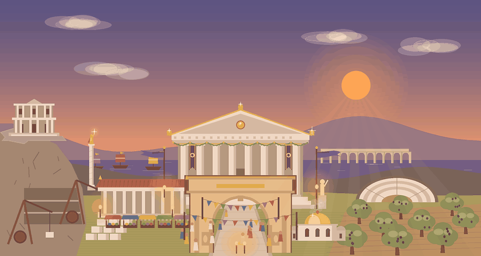
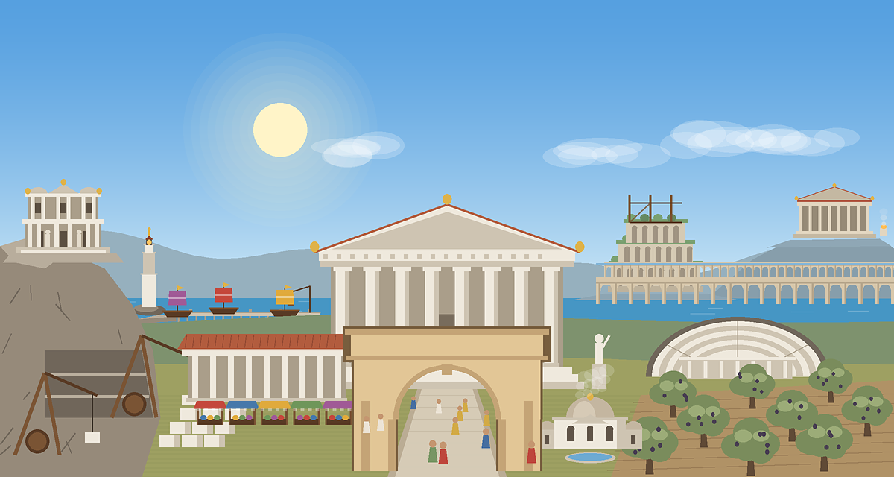
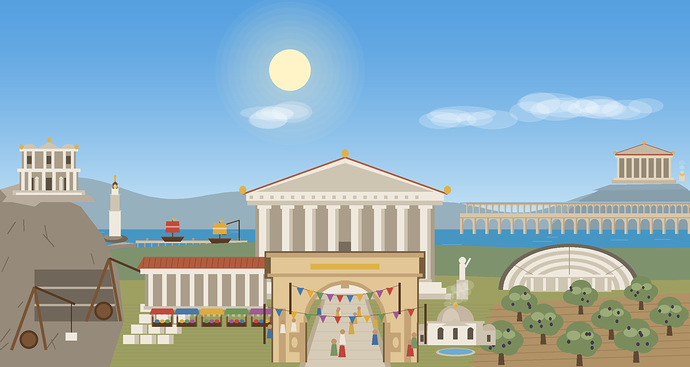
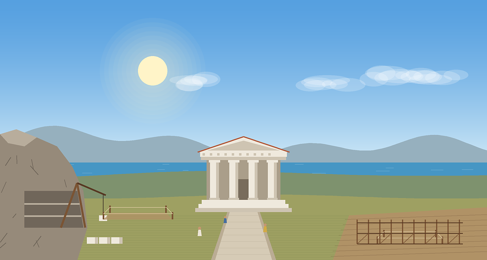
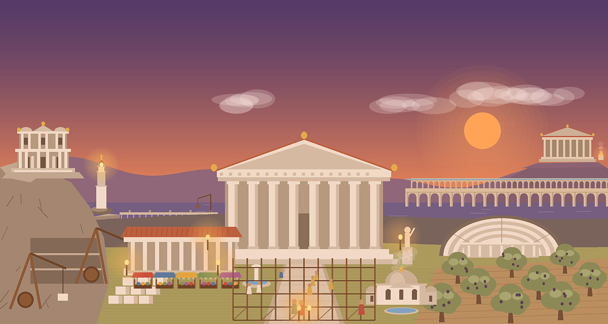
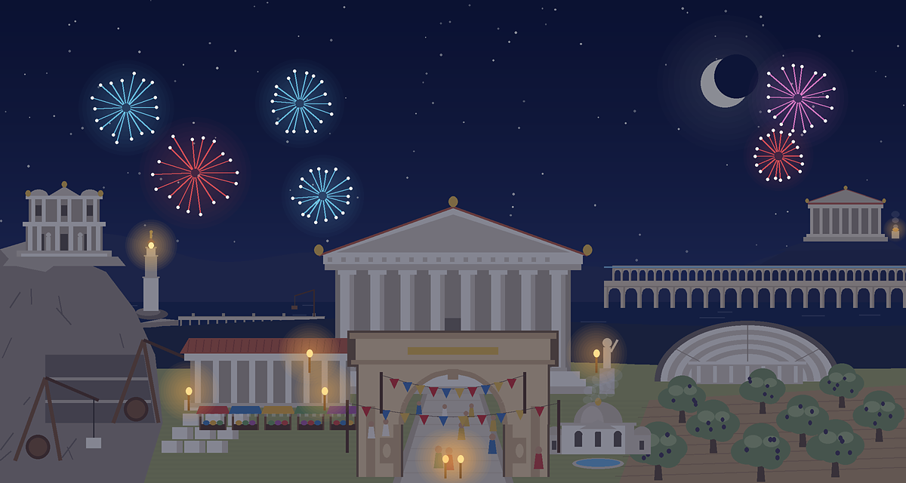
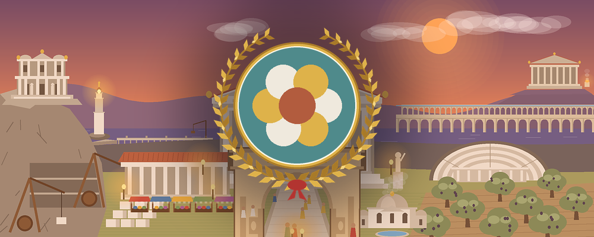

Discord için şehir kurma botu
Discord sunucunu, üyelerin birlikte inşa ettiği yaşayan bir antik kente dönüştür.

Kimse ek bir şey yapmak zorunda değil: sunucunuz ne kadar canlıysa şehriniz o kadar hızlı büyür.
Mesajlar 🪨 Mermer, sesli kanallar 🫒 Zeytin, mini oyunlar 🪙 Sikke kazandırır. Hepsi şehrin ortak hazinesine gider.
Sıradaki binayı üyeler butonlarla oylar. Hazine dolunca inşaat kendiliğinden tamamlanır.
Her bina sunucuya yeni bir güç kazandırır ve şehrin resminde görünür. Her şehir birbirinden farklıdır.
Bir şehir oyunu, eğlenceli mini oyunlar ve ihtiyacınız olan sunucu araçları, tek botta.
Şehir
On bir bina, üç seviye ve her biri sunucuya yeni bir güç. Meclis'te üyeler sıradaki inşaatı oylar; şehir, gökyüzü saatine, festivallere ve canlılığına göre her seferinde yeniden çizilir. Hiçbir şehir diğerine benzemez.

Ortak hedefler
Şehir büyüyünce vatandaşlar bir Dünya Harikası seçer ve haftalarca birlikte inşa eder. Paros'a, Efes'e, Truva'ya seferler gönderilir; mürettebat yoldaki korsanlara ve fırtınalara oyla karar verir, ganimet ve antik eserlerle döner.
Oyunlar
Bilgi Yarışması, Refleks, Sfenks'in Bilmecesi, Hazine Mağarası ve Tarih Sırası: her oyun şehre Sikke kazandırır. Her ayın ilk haftası bütün şehirler Büyük Oyunlar'da yarışır; günde en çok sekiz oyun sayıldığı için kalabalık değil, her gün oynayan kazanır.
Herkese bir rol
Sohbet ederken antik eserler bulun, müzeye bağışlayın ve temalı koleksiyonları tamamlayıp sergiler açın. Taş ustası, kâşif ya da ozan olun: her meslek şehre kendi yoluyla katkı yapar. Rozetler ve şehir başarımları her emeği görünür kılar.
Sunucu araçları
Hoş geldin kartı, otomatik rol, üye doğrulama, uyarı ve moderasyon kaydı, gizli alt başlıkta destek talepleri ve rol menüleri. Yeni bir sunucu mu açtınız? Kurulum sihirbazı kanalları, rolleri ve izinleri birkaç tıkla hazırlar. Hepsini web panelinden yönetin.
/şehir yazın, şehrinizin resmini görün. Gökyüzü saatine göre değişir: şafak, gündüz, gün batımı, yıldızlı gece.
200'ü aşkın sorulu Bilgi Yarışması, hızlı parmaklar için Refleks, ipucundan önce bilenin kazandığı Sfenks'in Bilmecesi, şansını zorladığın Hazine Mağarası ve Kütüphane'yle açılan Tarih Sırası. Amfitiyatro kurulunca kazananlar şehre Sikke kazandırır.
Her gün katkı veren kişi sayısı şehrin canlılığını belirler. Canlı şehirler daha hızlı üretir; sokakları kalabalıklaşır.
Misafirden Meclis Üyesi'ne altı unvan. İsterseniz her unvana bir Discord rolü bağlayın, Civita kendisi versin.
İsteyen şehirler prestijleriyle yarışır. Başka sunucularla kardeş şehir olun: canlı kardeşler üretime bonus katar, birbirinize kervan gönderirsiniz.
Yılbaşında havai fişekler, baharda çiçekler; özel günlerde şehir süslenir ve bonuslar gelir.
Limana bir tüccar gemisi yanaşır, bir fırtına yaklaşır, bir elçi hediye getirir. Vatandaşlar oyla karar verir; bazı olaylar hikâyeye dönüşür ve seçiminiz saatler sonra geri döner: yarım bir hazine haritası, kıyıya vuran bir batık, kapıdaki sürgünler.
Şehir Paros'un mermer ocaklarına, Efes çarşısına, Truva harabelerine ya da İskenderiye Kütüphanesi'ne sefer gönderir. Mürettebata katılan her kişi ganimeti büyütür; yolda korsanlar, fırtınalar ve kâhinler beklenir. Sefer birkaç saat sonra ganimet ve antik eserlerle döner.
Forum büyüyünce vatandaşlar Dev Heykel, Asma Bahçeler ya da Büyük Anıt arasında oylama yapar. Harika herkesin bağışlarıyla beş aşamada yükselir ve şehrin resminde sonsuza dek durur.
Her ayın ilk haftası bütün şehirler mini oyunlarda yarışır. Günde en çok 8 oyun sayılır: kalabalık değil, her gün oynayan kazanır. Dünyada ilk üçe madalya, kardeş şehirler arasında birinciye defne tacı.
Taş ustası, çiftçi, kâşif, ozan ya da rahip olun; her meslek şehre kendi yoluyla katkı yapar. Müzede temalı koleksiyonları tamamlayın, sergiler açın.
Yeni üyeler, sunucunuzun kendi şehrinin üzerinde defne çelengiyle karşılanır.
Komut yazmaya gerek yok: kanala sabitlenen düğmeli panelden şehrinizi, profilinizi, günün emirlerini ve başarımlarınızı görün, tek tıkla bilgi yarışması başlatın.
Üyelere rozetler (bir haftalık seri, arena şampiyonu…), şehre başarımlar. Meclis her gün sunucunun büyüklüğüne göre üç ortak hedef koyar; tamamlayınca hazine dolar.
Sohbette, seste, oyunlarda ve Meclis'te arada bir antik eser bulunur: Lidya sikkesinden Antikythera Mekanizması'na 32 eser. Eserleri şehrin müzesine bağışlayın; müze büyüdükçe şehir daha çok üretir.
Her pazartesi Acta Diurna şehrin haftasını özetler: manşet, haftanın vatandaşları, sayılar, yeni binalar, terfiler ve biraz dedikodu.
Uyarı, susturma, atma, yasaklama, mesaj temizleme, işlem kaydı, yeni üye doğrulama ve gizli alt başlıkta açılan destek talepleri ve üyelerin kendi rollerini seçtiği rol menüsü. Hepsi Discord yetkilerine göre.
Yeni bir sunucu mu açtınız? Topluluk, Oyun, Antik şehir ya da Arkadaş grubu düzenini seçin; kanallar, kategoriler, roller ve izinler birkaç tıkla hazır. Hiçbir şey silinmez, istenirse geri alınır.
Discord'la giriş yapıp her şeyi tarayıcıdan yönetin: ayarlar, istatistik grafikleri, canlı önizlemeli mesaj düzenleyici (embed, düğmeler), rol menüsü kurucusu, moderasyon geçmişi ve değişiklik kaydı.
İsteğe bağlı, sunucu başına: şehir arması, şehrin hikâyesi, vatandaş kartları, doğum günleri, hareketli şehir, temalar ve daha fazlası. Oyunda avantaj sağlamaz.
Premium'a bak →Civita, topluluğunuzun güvenini ilk günden ciddiye alır.
Mesaj içeriği izni kullanılmaz; yalnızca bir mesajın yazıldığı sayılır. Ses dinlenmez, kaydedilmez.
Her yönetim işi Discord'daki yetkinize göre çalışır; panel her değişiklikten önce izninizi yeniden kontrol eder.
Veriler satılmaz, reklamda kullanılmaz; istediğiniz zaman silinmesini isteyebilirsiniz.
Premium yalnızca görünüm ve yönetim araçları ekler; üretim, ödüller ve sıralamalar herkes için aynıdır.
Bütün resimler Civita'nın kendisi tarafından, o anki şehre göre çizilir.





Komutlar herkesin kendi Discord dilinde görünür.
Evet. Şehir oyunu, sunucu araçları, kurulum sihirbazı ve web paneli ücretsizdir ve ücretsiz kalacak. İsteğe bağlı Premium yalnızca süs ve kolaylık ekler (hareketli şehir, şehir temaları, özel hoş geldin kartı, gazete ön sayfası, zamanlanmış duyurular, özel komutlar, birden çok rol menüsü…); oyunda avantaj sağlamaz.
Hayır. Civita mesajlarınızın içeriğini okumaz ve saklamaz; yalnızca "biri mesaj yazdı" bilgisini şehre kaynak kazandırmak için kullanır.
Türkçe, İngilizce, Almanca ve İspanyolca. Herkes Civita'yı kendi Discord dilinde görür; yöneticiler isterse sunucu için tek bir dil seçebilir.
Civita'yı sunucunuza ekleyin ve sohbete devam edin: duyurular için uygun bir kanalı kendisi seçer, birkaç dakika içinde ilk Meclis oylaması gelir. Sunucunuz yeniyse paneldeki kurulum sihirbazı kanalları ve rolleri sizin için kurar. Yöneticiler her şeyi /kurulum ya da web panelinden değiştirebilir.
Hayır. Hoş geldin mesajı varsayılan olarak kapalıdır; moderasyon araçlarını kullanıp kullanmamak size kalmış.